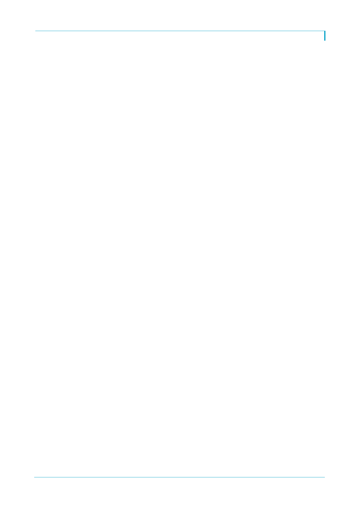

아모레퍼시픽(090430)
- 중국은 1~2월 매출 성장세 상당히 좋아 3월 둔화 상쇄. 1Q17 30% 이상 성장 추세.
- 3월 3~4주보다는 4월에 회복 국면. 바닥은 지난 것으로 판단. 정상 수준은 아니지만 3
월보다는 개선되었음
Q2) 전사 인건비(국내, 해외)? 세전이익 부진 이유?
- 총 300억원 이상 해외와 국내 모두 인건비 증가. 3년에 한번씩 지급되는 장기 인센티브
(2014~2016년) 1회성 비용 ~100억원. 이를 제외한 ~200억원 내외 많은 부분이 해외
사업 인력증가와 인센티브 비용이 증가
- 외환차손으로 인한 영업 외 손실이 ~160억원. 1Q16 일회성 이익이 ~120억원
Q3) 중국 현지 브랜드별 타격 정도? 디지털/온라인 세부?
- 중국에서는 라네즈와 마몽드가 다소 영향 받고 있음. 설화수, 이니스프리, 에뛰드는 상
대적으로 양호.
- 면세 +11% 중: 1) 국내 면세 높은 한자리수 - 1~2월 호조, 3월 역성장; 2) 해외 면세
+30% YoY 이상, 3월부터 성장 둔화. 중국인 매출 비중이 높은 거래처 매입 추이가 약함
- 디지털은 +2% YoY. E-commerce +20% YoY, 홈쇼핑 역성장, 홈쇼핑 비중은 지속적
인 감소 추세
- 인건비를 제외해도 수익성 부진: 1) 매출 성장이 약하면서 고정비 레버리지가 전체적으
로 낮아짐 2) 럭셔리 스킨케어보다 메이크업, 스킨케어도 럭셔리보다 프리미엄이 호조. 이
러한 영향으로 인해 원가율이 상승 추세
Q4) 국내 기타 채널별 성장? 매출 호조에도 불구하고 마진 낮아진 이유?
- 1) 아리따움 -8~9% 역성장. 2) 방판 카운셀러 수 감소, 제품 품목 고가 스킨케어보다
색조, 건강식품에 집중해 낮은 ASP. 낮은 한자리수 역성장. 3) 백화점 매출은 헤라 부진
으로 소폭 감소
- 면세에서 크게 개선되거나 중국에서 크게 회복되지 않는 한 수익성 부담. 국내 트렌드
자체가 높은 GPM을 guarantee하기가 어려움
- 해외 수익성:
중국 수익성 이익률 YoY 보합 수준. Asia(ex-China) 인건비 증가로 전체 마진 하락.
3Q16부터 해외 마진이 약세인 이유: 1) 홍콩 수익성 악화, 2) 싱가폴 (고마진) 사업의 매
출 비중이 축소.
미국 적자는 작년보다 크게 확대되어 연 100억원 내외 전망. 유럽도 롤리타 렘피카 라이
선스 종료로 2Q17부터 매출과 이익이 큰 폭 감소 전망
Q5) 미국 시장 진출 계획?
- 기존에 아모레퍼시픽이라는 브랜드를 회사 알리는 차원에서 미국 사업 진행. 올해부터
메인스트림 시장 확대
- 3Q17 이니스프리 런칭. 준비 작업 진행 중. 제품에 대한 허가 작업과 플래그쉽 매장 출
시 계획. 오프라인 사업 전 온라인 먼저 시작 예정
- 라네즈는 기존 Target에서 판매했으나 메인스트림 시장으로 이전 중. 2H17에 세포라
정식 런칭 계획. 오프라인 사업 전 온라인(공식 홈페이지, 세포라) 먼저 시작 예정
Q6) 용산 사옥 이전과 관련된 비용 및 수익 기대 효과는?
- 2017년도 감가상각비=임차료
- 내년부터는 임대료 절감 및 임대수익이 발생할 것. 임대 수익으로 감가상각 증가는 상
쇄할 것
2